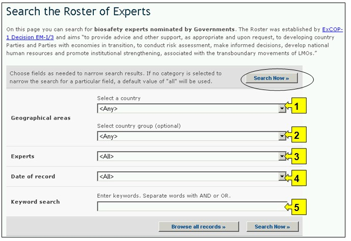
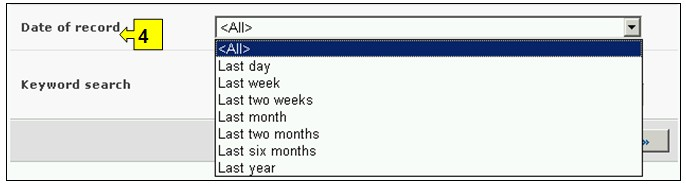

عنوان الموقع على الشبكة: http://bch.cbd.int/experts/
وضعت هيئة إدارة الاتفاقية قائمة بأسماء الخبراء عندما اعتمد البروتوكول (انظر القرار EM-1/3). والهدف من هذا هو إسداء المشورة وغيرها من الدعم، حسب الاقتضاء وبناءً على الطلب، إلى البلدان النامية الأطراف والأطراف من البلدان ذات الاقتصادات التي تمر بمرحلة انتقالية، لإجراء تقييم للمخاطر، واتخاذ قرارات مستنيرة، وتنمية الموارد البشرية الوطنية وترويج التعزيز المؤسسي، المرتبطة بنقل الكائنات الحيّة المحوَّرة عبر الحدود.
وقرّرت هيئة إدارة البروتوكول أن يُحافظ أن يتم الحفاظ على وسائل الاطلاع على قائمة الخبراء من خلال غرفة تبادل معلومات السلامة الأحيائية، حيث تتوافر بها استمارات الترشيح لإدراج الأسماء في القائمة، لكي يتسنى للأطراف ترشيح خبراء. ويمكن النفاذ إلى التقارير بشأن القائمة الخاصة بقاعدة بيانات الخبراء والصندوق الطوعي تحت قسم الإبلاغ في صفحات البروتوكول. ويشتمل نموذج التدريب 03 على سُبل الاطلاع على هذه التقارير.
ويمكن الوصول إلى آلية البحث المتعلقة بقاعدة بيانات قائمة الخبراء من قائمة الاختيارات المنسدلة الخاصة بإيجاد المعلومات على شريط التصفح، أو من الوصلة في قائمة الاختيارات إلى اليسار في صفحة إيجاد المعلومات أو الوصلة في نص قائمة الخبراء على الصفحة ذاتها. وهذه الوصلات تحمل المستعملين إلى صفحة البحث عن قائمة الخبراء حيث يستطيع هؤلاء البحث عن خبراء السلامة الأحيائية الذين رشحتهم الحكومات.

صورة 57

صورة 58
وفي صفحة البحث عن قائمة الخبراء، يسمح الزرار الأول ابحث الآن (Search Now) للمستعمل بأن يتصفح جميع السجلات الموجودة في قاعدة البيانات هذه، عندما لا يتم اختيار أية معايير في أُطُر البحث الواردة أدناه. وجرى تبويب النتائج في مجموعات حسب البلد.
تسمح قاعدة المعلومات هذه للمستخدمين البحث في قائمة الخبراء المرشحين من قبل حكوماتهم. وتوجد خمسة أُطُر لمعايير البحث مقدَّمة من أجل تنقيح عمليات البحث في قاعدة البيانات هذه. ولكل واحد منهم هنالك قائمة منسدلة تسمح باختيار المعايير المطلوبة. التركيب الاجمالي لقائمة الخيارات المنسدلة هي الفقرة الاولى على رأس قائمة الخانة. الزر الموجود على جهة اليمين من كل اطار يسمح للمستخدم بتفعيل عدة اختيارات. عندما يكون المستخدم في اسلوب الاختيارات المختلفة، من الممكن ان يضاف معايير مختلفة للاختيارات من خلال الضغط على المعيار المناسب والضغط على مفتاح (Ctrl).
الإطار 1 {اختيار بلد} يسرد جميع أسماء البلدان في قائمة اختيارات منسدلة، لكي يتسنى للمستعملين اختيار السجلات من بلد محدد.

صورة 59
الإطار 2 {اختيار مجموعة بلدان} يسرد مجموعات البلدان في قائمة اختيارات منسدلة ليتسنى للمستعملين اختيار مجموعة محددة من البلدان من أجل إجراء بحث. قائمة مجموعة البلدان تتضمن اهم المجموعات الجغرافية و السياسية للبلدان وتسمح لتضييق نطاق البحث بالسجلات المقدمة من قبل اعضاء المجموعة/المجموعات المختارة.

صورة 60
الإطار 3 { الخبراء} يسمح للمستخدم تطبيق برامج ترشيح للمعالجة (Filters) للاسم، الجنسية والبلد الذي قام بترشيح الخبير من اجل تضييق عملية البحث التي تتعلق خصوصا بالمعيار المختار.
ومع اختيار برنامج معالجة (Filter) من قائمة الاختيارات المنسدلة ينفتح إطار بحث إضافي مع قائمة اختيارات منسدلة متضمنة اختيارات تتصل بالبرنامج (Filter) المختار. ويمكن اضافة عدة برامج ترشيح ضمن استعمال زر ) Ctrl على سبيل المثال الضغط على المعيار عند الضغط على زر (Ctrl .

صورة 61
الإطار 4 {تاريخ السجل} يسمح للمستعمل بأن يضيق نطاق البحث إلى التاريخ الذي أُدخل فيه السجل في قاعدة بيانات غرفة تبادل معلومات السلامة الأحيائية. وتعرض قائمة الاختيارات المنسدلة عدداً من الخيارات لتحديد البحث بالسجلات التي تم تقديمها بالمهلة الزمنية المحددة (على سبيل المثال "اليوم الفائت، الشهر الفائت، السنة الفائتة، الخ).

صورة 62
الإطار 5 {بحث الكلمة الدليلية} ايُعرض فرصة لاستخدام الكلمات الدليلية لتضييق نطاق البحث. ويستطيع المستعمل أن يستخدم تكوين جملة الكلمات الدليلية المعيارية (و/أو) للبحث مع استخدام عدة كلمات أو أجزاء أساسية من الكلمات (استيراد أو تصدير). البحث الذي يستخدم الكلمات الدليلية يصدر نتائج بالسجلات التي تتضمن النص الذي يتم البحث عنه فقط وليس المفردات التي لم يتم ادخالها (على سبيل البحث عن "الذرة" ينتج قائمة بالسجلات التي تحوي فقط كلمة "الذرة" ولكن ليس "Corn" أو "Zea mays").

صورة 63
ويوجد في أسفل آلية البحث ثلاث ازرار لانتاج قائمة بالسجلات. ويسمح زر ابحث الآن Search Now للمستعمل بأن يشغّل برنامج بحث استناداً إلى معايير البحث المختارة في أُطُر آليات البحث. نتائج البحث تفرز ابجديا مبدئيا وفقا لاسم البلد. ويسمح اختيار تصفح جميع الوثائق Browse all records (في أسفل آلية البحث) للمستعمل أن يحصل على قائمة بجميع السجلات الموجودة في قاعدة البيانات هذه.

صورة 64
وتوجد في صفحات نتائج البحث Search Results آلية تصنيف أعلى قائمة السجلات. وهذه يمكن استعمالها لتصنيف السجلات وفقاً للمعايير المحدّدة لتلك الفئة من المعلومات. وتذكّر أن معايير التصنيف تتغيّر عندما يختار المستعمل معايير مختلفة للبحث.

صورة 65
مثال: يرغب مستعمل في التعرف على خبراء من أوروبا لديهم خبرة في الحراجة وتقييم المخاطر. المستعمل (أ) يختار أوراسيا - المفوضية الأوروبية لأوروبا (Eurasia - European commission for Europe) في إطار المناطق الجغرافية، مجموعة البلدان، و (ب) يُدخل الحراجة وتقييم المخاطر (Forestry AND risk assessment) في إطار الكلمات الدليلية.
ومع الضغط لتشغيل زر ابحث الآن Search Now تظهر نتائج البحث. وتظهر هذه النتائج في شكل قائمة بالسجلات، مبوبة في مجموعات وفقاً للبلد. ويمكن مشاهدة معلومات تفصيلية بشأن كل خبير باختيار اسم الخبير، الذي يفتح سجل خبراء السلامة الأحيائية.
صورة 66

صورة 67